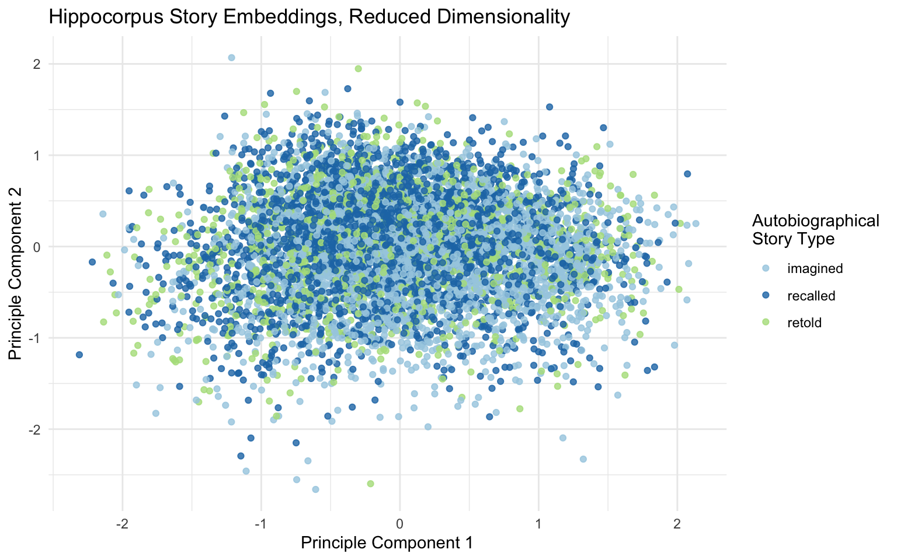

library(text)
# full texts (as character vector)
hippocorpus_texts <- hippocorpus_df$story
# embed the texts
hippocorpus_sbert <- textEmbed(
hippocorpus_texts,
model = "sentence-transformers/all-MiniLM-L12-v2", # model name
layers = -2, # second to last layer (default)
tokens_select = "[CLS]", # use only [CLS] token
dim_name = FALSE,
keep_token_embeddings = FALSE
)
# text embeddings as dataframe
hippocorpus_sbert <- hippocorpus_sbert$texts[[1]] |>
mutate(ID = hippocorpus_df$AssignmentId)
# rejoin other variables
hippocorpus_sbert <- hippocorpus_df |>
rename(ID = AssignmentId) |>
left_join(hippocorpus_sbert)19 Contextualization With Large Language Models
The models we discussed in Section 18.3 represent the meaning of each token as a point in multidimensional space: a word embedding. Word embeddings generated by models like word2vec or GloVe are often referred to as decontextualized embeddings. This name is a bit confusing, since as we saw in Section 18.3, the whole point of those models is to associate tokens with the contexts in which they tend to appear. A better name might be average context embeddings, since the best they can hope to represent is the average of the contexts in which a token appears throughout the training corpus. For example, consider the following uses of the token “short”.
My dad is very short.
My blender broke because of a short circuit.
That video was anything but short.
I can’t pay because I’m short on cash at the moment.
Any speaker of English can easily see that the word “short” means something different in each one of these examples. But because word2vec and similar models are trained to predict the context based on only a single word at a time, their representation of the word short will only capture that word’s average meaning.
How can we move beyond the average meaning and capture the different meanings words take on in different contexts? You are probably already familiar with Large Language Models (LLMs) like ChatGPT and Claude. At their core, much of what these models do is exactly this: They find the intricate relationships between tokens in a text and use them to develop a new understanding of what these tokens mean in the particular context of that text. For this reason, embeddings produced by these models are often referred to as contextualized embeddings.
Even if you are familiar with ChatGPT, you may not have realized that it uses embeddings. What do embeddings have to do with generating text? The core of all modern LLMs is a model called the transformer. We will not cover exactly how transformers work—for an intuitive introduction, see 3blue1brown’s video explanation. For the purposes of this book, all you need to know is this: Transformers start by converting all the words in a text into word embeddings, just like word2vec or GloVe. At the start, these word embeddings represent the average meaning of each word. The transformer then estimates how each word in the text might be relevant for better understanding the meaning of the other words. For example, if “circuit” appears right after “short”, the embedding of “short” should probably be tweaked. Once it has identified this connection, the transformer computes what “circuit” should add to a word that it is associated with, moving the “short” embedding closer to embeddings for electrical concepts. A full LLM has many layers. In each layer, the LLM identifies more connections between embeddings and shifts the embeddings in the vector space to add more nuance to their representations. When it gets to the final layer, the LLM uses the enriched embeddings of the words in the text for whatever task it was trained to do (e.g. predicting what the next word will be, or identifying whether the text is spam or not).
Even though LLMs can be extremely complex and capture many nonlinear relationships between concepts, the transformer architecture forces them to organize their embeddings in a roughly linear space in which each direction has a consistent meaning—a critical property for analyzing embeddings with cosine similarity and other straightforward methods. In order to extract an LLM’s rich, contextualized embeddings, all we need to do is run it on a text and stop it before it finishes predicting the next word (or whatever else it was trained to do). This way, we can read the LLM’s mind, capturing all of the rich associations it has with the text.
19.1 Hugging Face and the text Package
Leading commercial LLMs like GPT-4 are hidden behind APIs so that their inner workings are kept secret. We therefore cannot access the embeddings of these high profile models. Nevertheless, plenty of models that are almost as good are open source and easily accessible through Hugging Face Transformers. New open source models are added to Hugging Face every day, often by leading companies like Google and Meta. Any text-based transformer model can be accessed in R using the text package (Kjell et al., 2021). The text package makes running models and extracting embeddings easy even for those of us who barely understand how the models work.
The text package runs Python code behind the scenes, so you will have to set up a Python environment for it to run properly. For instructions on how to do this, see here. Once you have the package installed and working, you can begin generating contextualized embeddings for texts with the textEmbed() function. Let’s use the second to last layer of the all-MiniLM-L12-v2 model to embed the Hippocorpus texts as 384-dimensional vectors. Since the model includes preprocessing and tokenization built in, we can feed it the raw texts as a character vector. By default, textEmbed() creates the full text embedding by averaging the contextualized embeddings of each token in the text. This aggregation can take some time (especially for long texts like the Hippocorpus stories), so here we’ll just use the embedding of the [CLS] (classification) token. The [CLS] token is a special token that models based on BERT add to each text. Because the [CLS] token does not have a “real” meaning, but rather is inserted at the same place in every text, its contextualized embedding represents the gist of each text as a whole. In training, BERT models use the contextualized embedding of the [CLS] token to predict whether a given text does or does not come after the input text. This makes it a good general use embedding for when aggregating across all tokens is too time-consuming1. Even when the output is limited to the [CLS] token, textEmbed() can take a few hours to run.
19.1.1 Managing Computational Load
Running large neural networks on your personal computer can be time consuming at best. At worst, your computer runs out of memory and your R session crashes. If you are having problems like these, here are some ways you might lessen the computational load when calling textEmbed():
- Use a smaller model. Hugging Face model pages generally state how many parameters the model has. This is generally a good indication of how much computational capacity the model needs. For example, consider using
distilbert-base-uncased(67M params) oralbert-base-v2(11.8M params) instead ofbert-base-uncased(110M params). - Make sure you are asking for only one layer at a time (e.g.
layers = -2). - If you do not need individual token embeddings, set
keep_token_embeddings = FALSE. - To avoid aggregation costs, only ask for individual token embeddings (e.g.
tokens_select = "[CLS]"). Not every model usesCLS. make sure that you specify a token that is used by the model you are running—If you’re not sure which special tokens your model uses, try embedding a single text withtokens_select = NULLandkeep_token_embeddings = TRUE, and examining the results. - Run the model on your GPU with
device = 'gpu'(not available for Apple M1 and M2 chips). - If running the full dataset at once is too much for you or your computer, you can break it up into smaller groups of texts, run each on its own, and join them back together afterward.
Before you run textEmbed() on your full dataset, always try running it on two or three texts first. This way, you can get a sense of how long it will take, and make sure that the output is to your liking.
19.1.2 Choosing the Right Model
New LLMs are published on Hugging Face every day, and choosing one for your research can be daunting. Part of the beauty of LLMs is their ability to generalize—most popular models nowadays are trained on enormous datasets with a wide variety of content, and even the smaller models perform more than well enough to capture straightforward psychological concepts like emotional valence (Kjell et al., 2022). Even if your model isn’t perfect on every text, research generally relies on statistical patterns, so if your sample size is large enough, it shouldn’t matter. Even with that disclaimer, we can give a few recommendations:
-
BERT (Devlin et al., 2019) and DistilBERT (Sanh et al., 2020) models are reliable and well-studied. The BERT architecture was designed to be applicable to various tasks (not just next-word prediction, like GPT models), so it is likely to generalize well to whatever you need it for. Also, they use the
[CLS]token, which provides a good general-purpose embedding for cases in which aggregating all token embeddings is too computationally demanding. -
RoBERTa (Liu et al., 2019) is a refined version of BERT that is known to perform better in identifying personal characteristics of the author of a text. Ganesan et al. (2021) found that embeddings from the second to last layer of RoBERTa (averaged across tokens) outperformed BERT, XLNet, and GPT-2 on predicting gender, age, income, openness, extraversion, and suicide risk from social media posts and student essays. Matero et al. (2022) likewise found that RoBERTa was better than other models at predicting depression, and specifically recommended layer 19 when using the
roberta-largemodel. DistilRoBERTa is a lightweight alternative with only slightly worse performance (Matero et al., 2022), and XLM-RoBERTa is favored for analysis of non-English texts. RoBERTa models use the<s>(start) token instead of[CLS]. Nevertheless since RoBERTa is not generally trained on next sentence prediction, the behavior of the<s>will depend on the way the particular model you are using was trained. - MentalRoBERTa (Ji et al., 2021) is a version of RoBERTa that was fine-tuned on posts from Reddit communities dealing with mental health issues (e.g. r/depression, r/SuicideWatch, r/Anxiety).
-
SBERT: Word2vec, GloVe, and related models (Section 18.3) have architectures that guarantee vector spaces with consistent geometric properties, allowing researchers to confidently compute averages between vectors and interpret linear directions as encoding unique semantic meanings (Ethayarajh et al., 2019). In contrast, the ways that LLMs organize meaning in their embedding spaces are not well understood and may not always lend themselves to simple measures like those described in this book (Cai et al., 2021; Li et al., 2020; Reif et al., 2019). Some researchers have tried to fix this problem by creating models that encourage embeddings to spread out evenly in the embedding space, or that explicitly optimize for reliable cosine similarity metrics. One popular line of such models is SBERT. These models, including
all-MiniLM-L12-v2, which we use here, have been demonstrated to work well for directional measures like cosine similarity.
19.2 Dimensionality Reduction
Some studies suggest that using Principle Component Analysis (PCA; see Section 18.2.1) to reduce the dimensionality of a set of contextualized embeddings can help their ability to quantify psychological characteristics. Specifically, Ganesan et al. (2021) found that reducing RoBERTa embeddings to 64 dimensions using PCA is sometimes better and never worse than using them raw (at least when mapping them to psychological characteristics using machine learning techniques; see Section 20.2.4). This may be because PCA recenters the embeddings and emphasizes the salient differences between the documents of a particular dataset, which are otherwise fairly similar to each other. To reduce the dimensionality of your embeddings, use the function provided here:
# `data`: a dataframe with one embedding per row
# `cols`: tidyselect - columns that contain numeric embedding values
# `reduce_to`: number of dimensions to keep
# `scale`: perform scaling in addition to centering?
reduce_dimensionality <- function(data, cols, reduce_to, scale = FALSE){
in_dat <- dplyr::select(data, {{ cols }})
pca <- stats::prcomp(~., data = in_dat, scale = scale, rank. = reduce_to)
out_dat <- as.data.frame(pca$x)
dplyr::bind_cols( select(data, -{{ cols }}), out_dat )
}
# reduce dimensionality of SBERT embeddings from 384 to 64
hippocorpus_sbert_64d <- reduce_dimensionality(
hippocorpus_sbert,
Dim1:Dim384,
reduce_to = 64
)Dimensionality reduction can also be useful for visualizing your embeddings. Let’s plot our Hippocampus texts by reducing their 768-dimensional embeddings to 2 dimensions that can be mapped to the x and y axis.
# reduce dimensionality of SBERT embeddings from 384 to 2
hippocorpus_sbert_2d <- reduce_dimensionality(
hippocorpus_bert,
Dim1:Dim384,
reduce_to = 2
)
# plot
hippocorpus_sbert_2d |>
ggplot(aes(PC1, PC2, color = memType)) +
geom_point(alpha = .8) +
scale_color_brewer(palette = "Paired") +
labs(title = "Hippocorpus Story Embeddings, Reduced Dimensionality",
color = "Autobiographical\nStory Type",
x = "Principle Component 1",
y = "Principle Component 2") +
theme_minimal()
The first two PCA components are the directions along which the embeddings in the dataset spread out the most. There do seem to be slightly more imagined stories in the bottom right, but otherwise story type seems mostly unrelated to these dimensions. This means that the main ways in which the stories are different from one another are not the ways that imagined, recalled, and retold stories are different from one another. This makes sense—the stories are about all sorts of events, and may even use slightly different dialects of English. The differences that we are interested in are more subtle.
Cai, X., Huang, J., Bian, Y., & Church, K. (2021). Isotropy in the contextual embedding space: Clusters and manifolds. International Conference on Learning Representations. https://openreview.net/forum?id=xYGNO86OWDH
Devlin, J., Chang, M.-W., Lee, K., & Toutanova, K. (2019). BERT: Pre-training of deep bidirectional transformers for language understanding. https://arxiv.org/abs/1810.04805
Ethayarajh, K., Duvenaud, D., & Hirst, G. (2019). Towards understanding linear word analogies. https://arxiv.org/abs/1810.04882
Ganesan, A., Matero, M., Ravula, A. R., Vu, H., & Schwartz, H. A. (2021). Empirical evaluation of pre-trained transformers for human-level NLP: The role of sample size and dimensionality. Proceedings of the 2021 Conference of the North American Chapter of the Association for Computational Linguistics: Human Language Technologies. https://doi.org/10.18653/v1/2021.naacl-main.357
Ji, S., Zhang, T., Ansari, L., Fu, J., Tiwari, P., & Cambria, E. (2021). MentalBERT: Publicly available pretrained language models for mental healthcare. https://arxiv.org/abs/2110.15621
Kjell, O., Giorgi, S., & Schwartz, H. A. (2021). The text-package: An r-package for analyzing and visualizing human language using natural language processing and deep learning. PsyArXiv. https://doi.org/10.31234/osf.io/293kt
Kjell, O., Sikström, S., Kjell, K., & Schwartz, H. (2022). Natural language analyzed with AI-based transformers predict traditional subjective well-being measures approaching the theoretical upper limits in accuracy. Scientific Reports, 12, 3918. https://doi.org/10.1038/s41598-022-07520-w
Li, B., Zhou, H., He, J., Wang, M., Yang, Y., & Li, L. (2020). On the sentence embeddings from pre-trained language models. https://arxiv.org/abs/2011.05864
Liu, Y., Ott, M., Goyal, N., Du, J., Joshi, M., Chen, D., Levy, O., Lewis, M., Zettlemoyer, L., & Stoyanov, V. (2019). RoBERTa: A robustly optimized BERT pretraining approach. https://arxiv.org/abs/1907.11692
Matero, M., Hung, A., & Schwartz, H. A. (2022). Evaluating contextual embeddings and their extraction layers for depression assessment. https://arxiv.org/abs/2112.13795
Reif, E., Yuan, A., Wattenberg, M., Viegas, F. B., Coenen, A., Pearce, A., & Kim, B. (2019). Visualizing and measuring the geometry of BERT. In H. Wallach, H. Larochelle, A. Beygelzimer, F. dAlché-Buc, E. Fox, & R. Garnett (Eds.), Advances in neural information processing systems (Vol. 32). Curran Associates, Inc. https://proceedings.neurips.cc/paper_files/paper/2019/file/159c1ffe5b61b41b3c4d8f4c2150f6c4-Paper.pdf
Reimers, N., & Gurevych, I. (2019). Sentence-BERT: Sentence embeddings using Siamese BERT-networks. In K. Inui, J. Jiang, V. Ng, & X. Wan (Eds.), Proceedings of the 2019 conference on empirical methods in natural language processing and the 9th international joint conference on natural language processing (EMNLP-IJCNLP) (pp. 3982–3992). Association for Computational Linguistics. https://doi.org/10.18653/v1/D19-1410
Sanh, V., Debut, L., Chaumond, J., & Wolf, T. (2020). DistilBERT, a distilled version of BERT: Smaller, faster, cheaper and lighter. https://arxiv.org/abs/1910.01108
Nevertheless, using
[CLS]embeddings is slightly inferior to averaging the contextualized embeddings across tokens (Reimers & Gurevych, 2019).↩︎